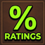

WoW Addons
Welcome! I write lightweight, reliable addons to fill specific gaps that my friends and I have run into while playing World of Warcraft. I always appreciate feedback, so feel free to check them out and let me know what you think!
Addons

World of WarcraftPercentage Ratings
A lightweight World of Warcraft addon designed to display rating percentages and detailed analytical stats. Custom-built (under the folder name Midnight Ratings) to help you track and optimize your performance during competitive matches without taxing memory.
--- Downloads
World of Warcraft
Yem Circles
A highly optimized addon for World of Warcraft that displays custom visual circle indicators, combat status layouts, and clean graphical alerts to simplify encounter tracking.
--- Downloads